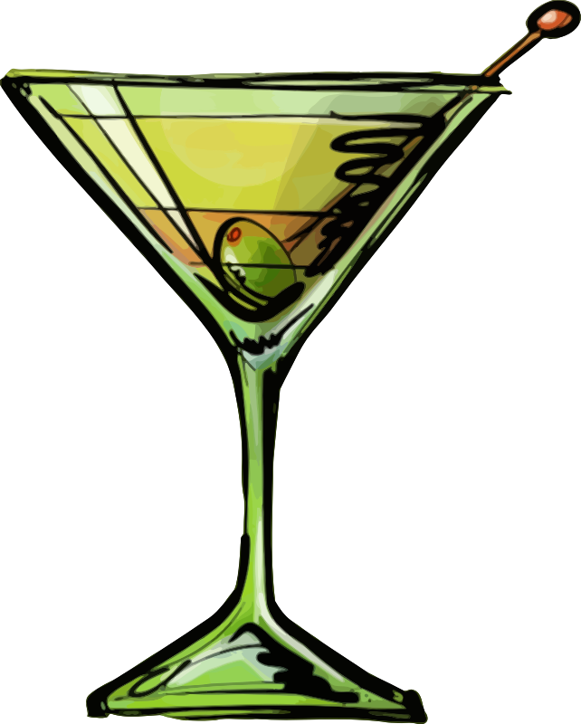

Description
The martini is a cocktail made with gin and vermouth, and garnished with an olive or a lemon twist.
Ingredients
- 100ml gin
- 50ml dry vermouth
- 2 pitted queen olives, or twists of lemon peel
Steps
- Place 2 Martini glasses in the freezer to chill, preferably an hour in advance.
- Fill a cocktail shaker with ice and pour in the gin and vermouth, tweaking the ratios according to your taste; the more gin you add, the drier and stronger the drink will taste. Stir vigorously and strain into the frozen glasses.
- Garnish with an olive or a twist of lemon.